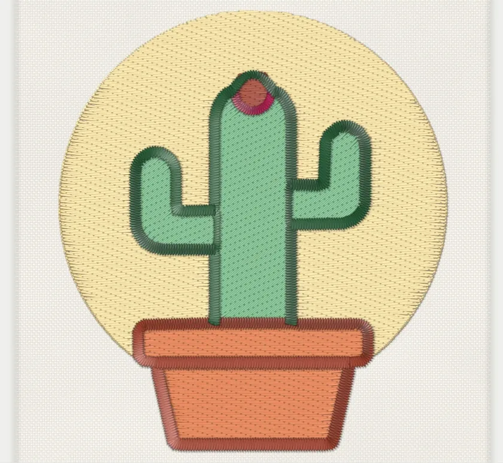
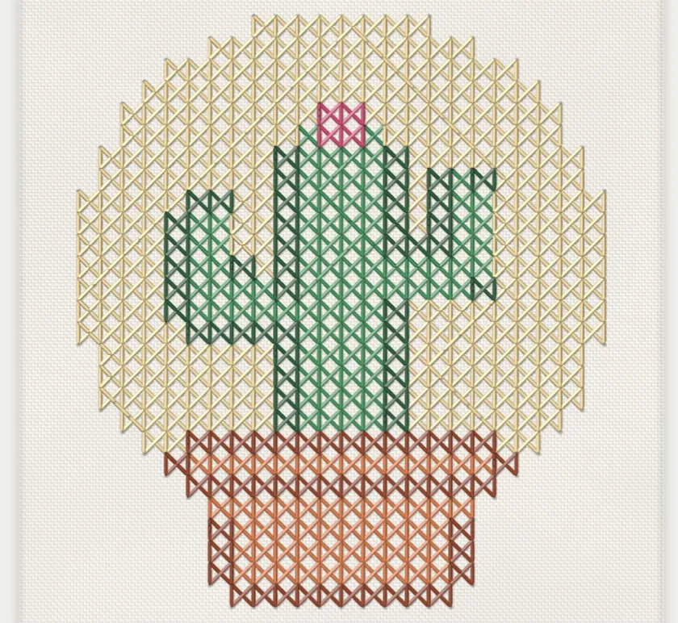

Auto-digitize
Drop in a picture, get stitches back
Pick a preset (Logo, Patch, Line art, Photo, Pixel art and more). Filum reduces the colours and chooses a stitch for every region: fills for areas, satin for strokes, running stitch for fine lines. Or switch the output to cross stitch.
The optional AI helpers run on your own device. Nothing is uploaded.

